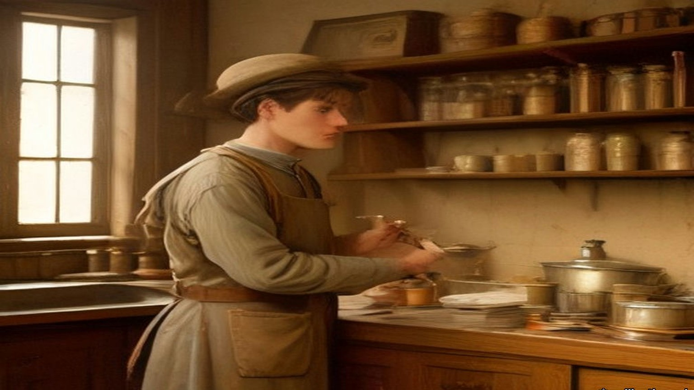
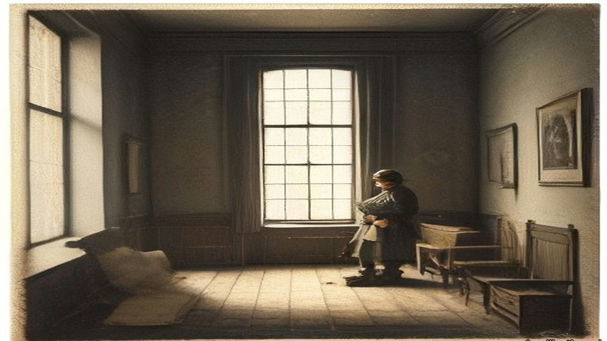
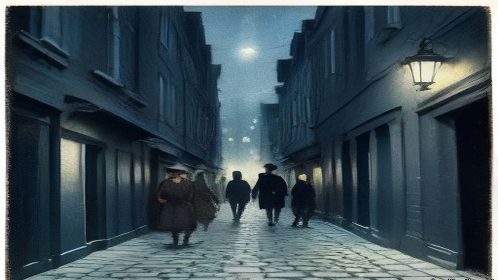
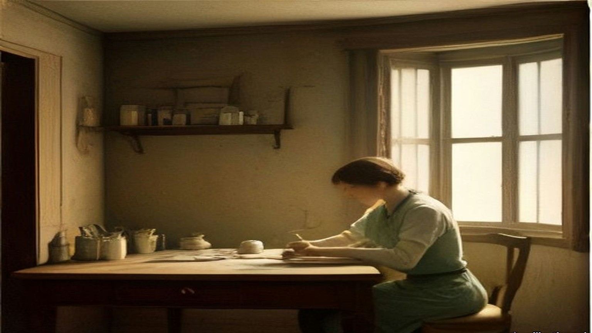
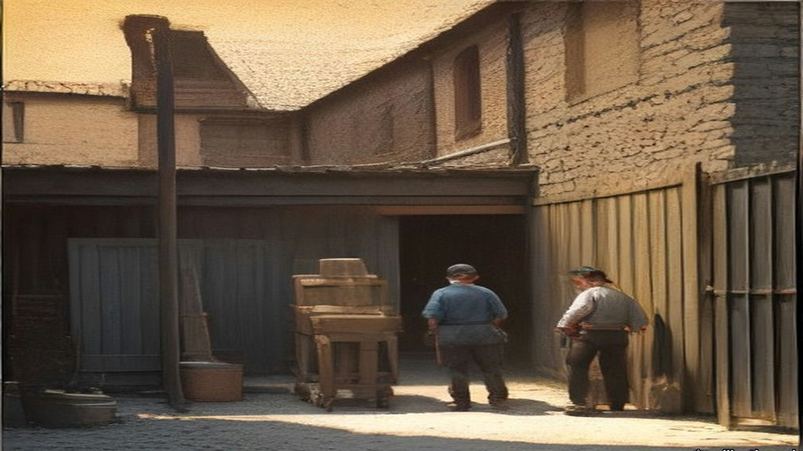
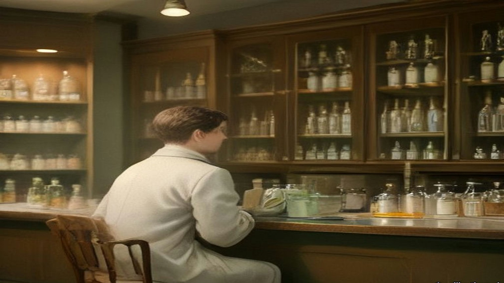
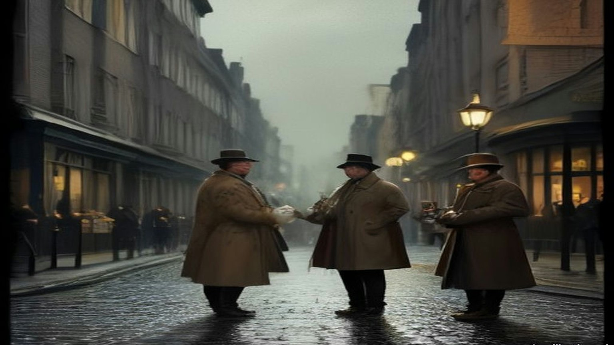

Chapter 18
Candles from the Staff Sergeant's Store, 1911–1921
The DMP Depot, Exchange Court, Great Brunswick Street, Phibsborough, the Mansion House, Soloheadbeg, Drumcondra and Arbour Hill, 1911 to 1921
Éamon Broy was born and reared at Ballinure, near Rathangan in county Kildare, on the Offaly border, beside the Bog of Allen. His people were farmers. The British Army was near at hand at the Curragh. In January 1911 he joined the Depot of the Dublin Metropolitan Police.
The half year in the Depot did not count as service in the force. Service began only when training was over, so nobody administered an oath to the recruits when they came in. Inspector Denis Carey had charge of their training. He was a world-famous athlete, and he made a most dashing figure in uniform. When he gave instruction in police duties the recruits found they could not attend to a word of it. They could only look at him and remember what he had thrown.
Among the men who joined with Broy was Michael Navin, an athlete himself and a living encyclopaedia of Munster athletics. While they were in the Depot a stranger came to stay as Carey's guest. He was about forty, stout and prosperous and American in appearance, well over eighteen stone and under six feet, and very neat on his feet for it. Navin went through the photographs in the athletic papers and decided that he was John Flanagan, the triple Olympic hammer champion. He was.
Broy was training at the Ballsbridge grounds at the time. Carey told him to take a 16 lb. hammer out there for Mr. Flanagan, and handed him a small leather case. It was heavy enough. It was nowhere near long enough. Broy's textbook on athletics, some years old, showed the hammer as a rigid four-foot sledge, and practical jokes in the Depot were common. He was sure Carey was pulling his leg to give Flanagan a laugh. When he was out of sight of the Depot he opened the case. Inside was the modern hammer, the handle of flexible piano wire with a steel grip, the head a leather centre covered with a sphere of brass.
He felt as proud carrying it as a man carrying a sword to Wolfe Tone.
That day he saw Flanagan throw, a heavy man spinning in the circle and throwing up the dust like what the country people called a "fairy blast." Flanagan told him about athletics in America and gave him an autographed photograph of himself in action. Broy ran to tell Navin and make him green with envy. Navin knew all about the modern hammer. Flanagan had invented and patented it years before.
Later Broy watched the two men practise at Ballsbridge. Carey passed 160 feet with a couple of throws. Coming in off the field he winked at Broy.
"If I get in a couple of throws like that at the sports I'll give John here a fright."
"Ah, Dinny," said Flanagan, "I've won by inches in my time."
At the D.M.P. sports Flanagan won at about 170 feet, with Carey some ten feet behind him. Then Flanagan went home to Kilmallock to farm. He told them he hoped to be there in time to sow his turnips.

* * *
The Depot and Exchange Court, 1911 to 1915
Andy O'Neill and Michael Gleeson were in the Depot in Broy's time. O'Neill was from the Wexford-Carlow border, a weight-thrower and boxer of fifteen and a half stone who neither drank nor smoked. Gleeson was a Tipperary man. In July 1914, on the Howth Road, they were the first two constables ordered to disarm the Volunteers coming back from the landing of rifles at Howth, and they refused. None of the men who had known them in the Depot was in the least surprised.
The recruits discussed the national question openly in the Depot. It was the first place Broy heard "The Men of the West" sung. One recruit with anti-national views said in front of O'Neill that he would oppose the coming of Home Rule.
"Just imagine a like you trying to prevent Home Rule coming," O'Neill said. "You would be torn into small pieces."
They were taught what the oath would be. It bound them to serve without fear or favour, and there was a proviso: "I swear that I do not now belong to, and that whilst serving I shall not belong to, any secret society whatsoever, the Society of Freemasons excepted." They thought it a great piece of presumption to put that in an oath in Ireland in the twentieth century. The recruits were sworn in batches of about twenty. Several of them neither touched the Bible nor repeated the words.
The force was about 1,200 strong. The constables carried batons. They were trained on the revolver but not the rifle, and a city policeman practically had to be fired on before he was free to shoot. "You would need to make a dying declaration before firing in order to be legally safe," some of them said. The Chief Commissioner was Sir John Ross of Bladensburg. The Assistant Commissioner was William Vesey Harrel, who in July 1914 led the attempt to disarm the Volunteers on the Howth Road.
Broy was posted to E Division, the uniformed men between the Grand Canal and the Dodder, where there were plenty of sports grounds. Between 1911 and 1914 he won sprints and high jumps in Dublin and England. When the Curragh officers refused to move against Ulster in March 1914, some of the senior men in the force gravely shook their heads. One of the younger men said, "By God, two parties can play at that game."
The detectives were the G Division, about forty of them, chosen from men with three years in uniform who passed an examination in English composition, arithmetic, handwriting and a knowledge of the streets. The political section watched the people it called Suspects, always with the capital S, always the word before the name: Suspect Lord Ashbourne, Suspect Sir Roger Casement. Men at the railway stations and the boats noted which Suspects left the city and for where, and sent cipher wires ahead. Others went round the town day and night and wrote down who met whom. Each detective kept his own book. Every day the entries were copied by hand into one very large central book.
In March 1915 Broy, with very little service, was put into the clerical section of political duty at Exchange Court, beside the Castle. The authorities wanted typewriters and card indexes. Before his time the reports to the Government had been written by hand. Now he typed the daily, weekly and monthly reports on the Suspects, in several copies. One went to the Commissioner, Colonel Edgeworth-Johnstone. One went to the Director of Military Intelligence, Major Price. One went to what was called "the Government." Towards the end of 1915 the G Division left Exchange Court for the new building at No. 1 Great Brunswick Street, at the end nearer D'Olier Street.
* * *
No. 1 Great Brunswick Street, Easter Week, 1916
The first word reached the Detective Office a couple of minutes after midday on Easter Monday, by telephone from the Central Police Telephone Office in the Castle. A party of Volunteers, with an ambulance corps and stretchers, had broken into some buildings in Marrowbone Lane and were barricading them. Then came the General Post Office, Jacob's, the Four Courts, Boland's Mills. The detectives who had followed the marching parties as usual came back one after another with the same story. The Volunteers had broken into such and such a building.
The Chief Commissioner ordered every member of the force off the streets. The detectives sat round the dining-room and compared notes. A message came about Constable O'Brien, shot at the gate of the Upper Castle Yard, and later one about the retaking of the Evening Mail office, which ended, "they are now carrying out the dead." The trains kept running up and down Great Brunswick Street for over an hour, their noise mixed with the rifle fire. The detectives meant to defend the building with their .32 automatic pistols. Broy and the other junior men had never been issued with any firearm at all.
Dublin soldiers home on leave drifted into the office, some with rifles, some without. Headquarters wanted lists of them several times a day, by regiment, then by rank, then in some other form. Joe Kavanagh, the detective officer who made out the lists, suggested to the Chief Inspector that they measure the soldiers for height, since sooner or later some brass hat would think of that too.
One morning in the middle of the week a field gun was set up outside the barrack on the Trinity College side. A crowd gathered to watch, men in mufflers with big moustaches advising the gunners how to lift the stone sets for the trail. The detectives got tired of waiting at the windows and went back to their cards. Then there was a swishing sound in the street and the crowd scattered. When they looked out one of the artillerymen was lying in the road, killed by a bullet from the corner building of Bachelor's Walk.
When the Rising was over the senior political men went to Richmond Barracks to pick out the leaders for trial by court-martial. The record books went to the Castle. An entry that Michael O'Hanrahan had met Thomas MacDonagh in Grafton Street three months before and talked for some minutes had not looked like much when it was written. At O'Hanrahan's trial it was brought forward as proof of his general activities against the British. Then the executions began, day after day.
Some time afterwards Broy met a United Irish League organiser who lived near Kilmainham Jail and had no good word to say for Sinn Féin. Broy asked him whether he had heard the firing.
"My God," the man said, "it was terrible waiting, and the volleys sounded in the morning like a clap of thunder."
On Easter Monday Kavanagh had been in the office in the Castle, where the D.M.P. headquarters store held about a hundred Webley and Scott .32 automatic pistols with ammunition. The storekeeper was away for the day. Kavanagh suggested to some of the others that they break in and take them, and kept about half a dozen for himself. After Easter Week he gave one to Broy.

* * *
Phibsborough, 14 August 1917
After the Rising there were so many pensions, transfers and promotions in the force that from about March 1917 Broy found himself alone in the office in Great Brunswick Street from eleven in the morning for the rest of the day. The documents captured in 1916 were kept there. He had been studying the history of Irish risings and why they failed. He had invitations to go to America and no intention of staying in the police. Next to Superintendent Owen Brien, who could have rewritten the record books from memory, he knew more about the Suspects than any man in the force. He began to ask himself what the men he knew as the Sinn Féiners could do with it.
He listed the dangers to them. Traitors. Spies from outside. Drink and boasting. The respectable man who wanted to be arrested and be a hero. Papers found on arrest. Coincidence: the Orangeman in the insurance office who visits a girl in the same street every week and sees two Sinn Féiners meet there every week. Volunteers newly served out with revolvers, who could not resist having a shot at something. He made up his mind to help them, regardless of the consequences.
On the evening he dated as 14 August 1917 a warrant reached the office at about six for the arrest of de Valera, said to be living at 34 Munster Street, Phibsborough. Detective Sergeant Fagan and Broy were the only men there, so they were sent. They were not to inquire at the house. They were to watch for him.
Fagan had a grievance. He was not on the political staff, and he had done a day's work in the office already. Broy encouraged the grievance as far as he safely could, and they agreed to keep away from Phibsborough until the political men came on at seven. Peadar Healy, a Volunteer who had been out in 1916, lived at 86 Phibsborough Road. Broy noted where No. 86 was. Near Mountjoy police station Fagan went in to telephone Superintendent Brien that they had not seen "that man," and invited Broy in for a drink. Broy said he was a teetotaller and would wait outside.
O'Hanrahan's shop, kept by the executed man's brother and sisters, was close by. He did not dare go in. Too many policemen lived round there, and he was known as an athlete. He sprinted to Healy's. Healy was out, but his brother was in. Broy told him who and what he was, and that de Valera was about to be arrested. Then he sprinted back.
Turning into the North Circular Road he ran into Detective Sergeant Revell from the political office in the Castle, a loyalist who lived in the district. Broy told him they were "looking for" de Valera and that Fagan was in the station. Revell went back with him, took Fagan's side, and agreed that the arrest should be left to the political men.
For a week the pressmen rang the Castle to ask whether there was a warrant out. The Superintendent would not comment. The detectives could not find de Valera anywhere, and remarked how odd that was, since he could be seen every day before the warrant was issued. A uniformed man, an athlete, stopped Broy in the street as two detectives went past, Hoey and Smith.
"Look at these two ......s, out looking for de Valera. It would come to a low day for a man like de Valera to be arrested by two ......s like them!"
On the Saturday morning Brien received the press at the Castle, rubbing his hands. "To be quite frank with you, there never was any warrant issued for the arrest of de Valera."
Some time afterwards Broy met Healy, who told him the warning had been checked and that de Valera asked him to thank Broy for it.
* * *
Benburb Street, Greystones and 5 Cabra Road, 1918
Broy could not go into O'Hanrahan's, so he found a go-between. Patrick Tracy was a clerk at Kingsbridge railway terminus, married to a first cousin of his, and a Sinn Féiner. Tracy agreed to carry whatever Broy gave him to the shop. Broy told him to tell O'Hanrahan that no information was ever to come back. From then on every secret document and police code that came into Broy's hands went to Volunteer headquarters by that road, papers from a slip to a hundred pages. He did not know who received them. He had never heard of Michael Collins.
In May 1918 the list for what the newspapers called the German Plot arrests came into his hands, with all the names and addresses for Dublin. He met Tracy in a public-house in Benburb Street on the Wednesday, forty-eight hours before the raid, and gave him a copy of the complete list. Tracy copied it in his own hand, and Broy destroyed his there and then. On the day of the raid, a Friday as he remembered, he met Tracy again.
"To-night's the night. Tell O'Hanrahan to tell the wanted men not to stay in their usual place of abode and to keep their heads."
Brien kept him in the Castle that night for telephone duty. "You will be much more comfortable here," he said. The messages came in one after another, every party reporting that it had its man. A Detective Sergeant at Harcourt Street station rang. "That man has just left."
"That man will get the suck-in of his life," said Brien, and rang the R.I.C.
About an hour later the R.I.C. at Greystones telephoned. "That man has been arrested."
A few days afterwards Brien looked hard at Broy. "The Shin Féiners boasted that their most important men had escaped arrest."
"When you have got de Valera, surely you have got enough."
Later that year Greg Murphy met him at Tracy's house in Millmount Avenue, Drumcondra, thanked him for the information, the like of which they had never had before, turned his mouth conspiratorially sideways and asked whether he would ever mind meeting Mick Collins. Broy looked Collins up in the record book. A six-footer, a Corkman, very intelligent, young and powerful. There was no photograph.
At 5 Cabra Road, in the Foleys' kitchen, Collins came in at the door in black leggings, green breeches and a trenchcoat with all the buttons, belts and rings, and before he had crossed the floor to shake hands Broy knew he was the man. They talked from about eight until midnight. Collins said de Valera had looked at his watch a few minutes before train-time that night and announced that he was going home, arrests or no arrests, and nobody could stop him. Broy asked why they had let him. Collins looked at Greg Murphy, Murphy looked at Collins, and they both smiled.

* * *
The Mansion House, Dublin, Tuesday, 21 January 1919
Seán Nunan had been born in London, drilled with the Volunteers in the German Gymnasium at King's Cross, fought in the Post Office in 1916 and done hard labour in an English prison for refusing to serve in the British Army. Now he was one of four clerks to Dáil Éireann. Cathal Brugha took the chair and proposed the four of them, Diarmuid Ó hÉigeartaigh, Riseárd Ó Foghludha, Seán Ó Núnáin and Pádraig Ó Síothcháin, and the House agreed.
Brugha told the public in Irish that they were there only to listen, and then said a few words in English for those who had no Irish. "We desire that there shall be no cheering whatever."
He read the roll. Antrim East, Lieutenant-Colonel McCalmont: as láthair, absent. Carson: absent. Joseph Devlin: absent. Denis Henry, South Derry: absent. Eoin MacNeill: present. Where the member was in jail it was Nunan's duty to answer for him, and he gave the same words each time.
"Fé ghlas ag Gallaibh." Locked up by the foreigners.
Arthur Griffith, twice. Éamon de Valera, for East Clare and again for East Mayo. Terence MacSwiney. Ernest Blythe, North Monaghan. For South Cork the Ceann Comhairle read Micheál Ó Coileáin, and the answer was as láthair. Countess Markievicz was in prison in England.
The Declaration of Independence was read in Irish, then in French, then in English by Eamonn Duggan, the member for South Meath.
"Now, therefore, we, the elected Representatives of the ancient Irish people in National Parliament assembled, do, in the name of the Irish nation, ratify the establishment of the Irish Republic and pledge ourselves and our people to make this declaration effective by every means at our command."
"We solemnly declare foreign government in Ireland to be an invasion of our national right which we will never tolerate, and we demand the evacuation of our country by the English Garrison."
The members stood and took the pledge after Piaras Béaslaí.
* * *
Soloheadbeg, county Tipperary, the same morning
Dan Breen and Seán Treacy had information that explosives were coming to the quarry at Soloheadbeg under an armed police escort. They expected it on 16 January. It came five days later. For five days they lay up behind the ditches above the by-road from Tipperary town, from before daybreak until two in the afternoon. After three days they kept eight men and sent the rest home, because they had no money to feed more. They slept at Breen's home, and his mother got them their breakfast at four every morning. On the fifth morning she said, "If you don't do something today, you can get your own breakfast tomorrow."
On 21 January the scout ran in. "They're coming, they're coming!"
They heard the horse's hooves first in the cold air, and the rumbling of a heavy cart. The driver, James Godfrey, and Patrick Flynn of the County Council, who was to take delivery, walked beside the horse. Two uniformed policemen with rifles followed a little way behind. Breen's pulse was racing until he saw them close. Then the nervousness went.
"Hands up!"
The policemen brought their rifles up to the ready. The call was made again. They did not give way.
"We took aim," Breen wrote. "The two policemen fell, mortally wounded."
They took the rifles and equipment and drove the cart off with more than a hundredweight of gelignite in it, Hogan on the reins and Treacy and Breen behind, on a farm cart without springs over a road of loose stones. Treacy reminded Breen that the book said explosives were dangerous when jolted. Afterwards they read in the newspapers the names of the dead men, Constables James McDonnell and Patrick O'Connell. A reward of £1,000 was offered for their capture. A few months later it was £10,000.

* * *
No. 1 Great Brunswick Street, one night in April 1919
In the early days at the Foleys', Collins called the papers he had been getting for two years their "correspondence course." Broy could see that he still did not understand the organisation behind them. They agreed that he would have to go into the office and read the books himself.
From ten at night until six in the morning one man was on duty in the Detective Office with the cipher, in case telegrams came. When the man on a week of nights had to go to court, someone covered him for a single night, and Broy was often chosen. Meeting Collins one night in April 1919, he was able to tell him he would be on duty the next night. Collins was to ring at twelve, to make sure there had been no last-minute change. He would be "Field." Broy would be "Long."
He went on at ten. The unmarried detectives went up to bed about eleven. From eleven, reports began to come in of shootings in Store Street and other places, and he wondered whether fate was going to take a hand. The inspector on night duty in the uniformed B Division next door was Daniel Barrett. Most uniformed officers gave the G Division a wide berth. Barrett was an ignorant, presumptuous man, quite capable of reporting a light in the office at night.
The secret office was on the first floor. It was semicircular, with many windows and blinds only on the bottom ones, and Broy saw he could not switch on the electric light there. The small secret room that held the books had no electric light at all. There would have to be candles.
Sergeant Kerr of the Carriage Office, a single man who slept in the building, was in the office talking to him, as he often was. At nearly half past eleven Broy tried to break the conversation off. At about a quarter to twelve Kerr said he would stay up and give him a hand, with all these messages coming in. They almost had a row. At about ten to twelve Kerr went to bed.
At twelve the telephone rang.
"Field here. Is that Long?"
"Yes. Bring a candle."
The new building had a brand-new set of keys and a master key in case any were lost. Broy had made himself another master key by filing one of the ordinary ones.
At about a quarter past twelve Collins arrived with Seán Nunan. Broy had told them to come armed and carrying sticks, because nobody could know what would go wrong. He let them in and showed them the back way and the yard door to Townsend Street in case anything happened.
A stone came through the window.
He looked at them. They looked at him. He sent them into a dark passage near the back door, to wait in the shadow, and went to look out on Great Brunswick Street. A policeman had a British soldier in custody on the pavement. Broy opened the door and asked what was wrong.
"This fellow is drunk and he is after throwing a stone in through the window."
The constable took the soldier into the station next door.
Broy went back and asked Collins for the candle. Collins had not brought one. He had thought Broy was having a joke at his expense.
Every D.M.P. station had a Staff Sergeant, the equivalent of an army quartermaster sergeant, who kept a store on the premises. A Staff Sergeant knew that he was always safe if he had too much of anything left over, and in trouble if he had too little, so the store was packed. Broy thought of his precious key. He opened the store and found plenty of candles, boxes of matches and soap. He took a couple of candles and a couple of boxes of matches and brought Collins upstairs.
With the same key he locked the main doors of the dormitories on the top floor, where the detectives were asleep. The same key opened the political office, and the secret small room built into the wall that held the records. He gave Collins and Nunan the candles, got them to close the door fairly tight, and went down.
As soon as he was downstairs there was a heavy knock at the door. It was the same constable, back to ask the value of the broken glass. Broy gave him a rough estimate, and the constable went away. Broy went up and told the boys what the noise had been, and came down again to mind the telephones.
Collins stayed from about a quarter past twelve until about five. He wanted the background of the correspondence. He wanted to know exactly how much the British knew about the Volunteers and Sinn Féin, which of their people were known, and, more important, which were not. "He wanted to try to gauge the mentality behind the records, and then to use the police secret organisation as a model, with suitable improvements and modifications, for Volunteer requirements." He took away with him the bound volume of every telephone message the G Division had received during Easter Week.
Nunan, nearly forty years later, remembered the night his own way. Collins kept him back at Vaughan's Hotel after the others had gone, and at about half past twelve suggested a walk. They walked round the city and came to the police station, where Sergeant Ned Broy was alone on night duty. Broy took them up to Inspector McFeeley's office and opened a large steel safe, and they stayed in it listing the detectives on political work until about four in the morning. Then they walked home, Collins to Mountjoy Street and Nunan to Botanic Road.

* * *
St. Stephen's Green and Millmount Avenue, 1919
One evening Broy and Joe Kavanagh were walking in St. Stephen's Green, and each found out that the other was in touch with Collins. Broy told him about the night at No. 1 Great Brunswick Street. Kavanagh knew the mentality of the G Division office and he knew Mick, and he nearly fell down laughing. He made Broy tell it a second time. He laughed so much that people looked at him as if he were drunk or mad. He asked what Mick had looked like in the office.
"He looked like a big plain-clothes man going out on duty, with a stick."
At their first meeting Broy and Collins had agreed that the uniformed men were to be let alone, and that no G man who was not active on political duty was to be touched. A G man who stayed hostile was to be warned first, by tying him to a railing. Detective Officer Denis O'Brien, a Kanturk man who had made a particular set against the Munstermen, was the first. When he was let go and taken to the Castle, the Superintendent asked him why he had let himself be tied up. "I would like to know what anyone else would do in the same circumstances," O'Brien said. To some of the others he said afterwards, "They were damned decent men not to shoot me, and I am not doing any more against them."
About a fortnight before the end of July, Jim Slattery was called to a house in North Great George's Street, where Dick McKee and Mick McDonnell asked a roomful of Volunteers whether they had any objection to shooting enemy agents. Most of them objected. Slattery said he was prepared to obey orders. McDonnell told him that Detective Sergeant Smith lived in Millmount Avenue, came home by tram, got off at Botanic Avenue and walked across Drumcondra Bridge. Slattery was to wait at the bridge with Tom Keogh, Tom Ennis and Mick Kennedy, who knew Smith by sight.
They waited about five nights. One night a man came across the bridge and Kennedy said he thought it was Smith, but he could not be sure. "If this man turns into Millmount Avenue we will shoot him," Slattery said. The man walked past the Avenue and went down a lane along the backs of the houses. Slattery nearly dropped to his knees, thinking he had nearly shot an innocent man. Then they knew it was Smith, and he was out of range.
About a week later they shot him. They had .38 revolvers. Slattery thought he would fall the moment they fired, but when they hit him he ran. All four fired. Slattery and Keogh ran after him to his own door. He got into the house.
In the morning McDonnell told Slattery they had made a right mess of the job. "I can assure you that I was more worried until Smith died than Mick was," Slattery said. After that they used .45s.
After the shooting of Smith there was no more shooting for some time. Collins wanted to see how the public and the Volunteers took it.
On 22 June 1920 Colonel Ashley read the House of Commons a list of what had happened in Dublin in twelve months, beginning: "31st July, last year, Detective Sergeant Smith shot and died in hospital. 20th October, Constable Downing brutally shot by three armed men in High Street, Dublin. 11th November, outrage in Dublin, Detective Inspector Wharton shot dead in St. Stephen's Green." The Attorney-General for Ireland, Denis Henry, answered him. The courts had awarded compensation to the widows and children of murdered policemen, and county councils were trying to evade paying it. The Government would bring in a measure to take the money out of the grants to the counties, and would advance "at least a substantial portion of it" to the widows in the meantime.

* * *
Dublin Castle and Arbour Hill, 1921
On the night of 31 December 1920 the Auxiliaries raided Eileen McGrane's flat at 21 Dawson Street and found part of Tom Cullen's dump of documents. Among them were copies of secret reports of the political section that Broy had given Collins, every one more than a year old. Joe Kavanagh was dead by then, of a blood clot after an operation for appendicitis in Jervis Street hospital in September 1920.
In January 1921 a Detective Sergeant pinned Broy down to having typed two of the reports in his presence. The captured copies of those two were typed twelve letters to the inch. Every machine in the police offices typed ten. Broy pointed that out. The Sergeant had stood beside him while he typed, and Broy had not dared make an extra copy, so he had put in new carbon sheets and given the carbons to Collins afterwards. Collins had had Miss Moran copy them on a portable typewriter, twelve to the inch. The Commissioner was puzzled.
In the third week of February Superintendent Purcell took him to the Commissioner's office in the Castle. Purcell came out trembling, his face as white as a sheet, and told him in a quavering voice that he was to be arrested for giving out the documents to the Sinn Féiners. For a matter of seconds Broy had the choice of knocking out the two officers and trying to shoot his way past the Auxiliary sentries at the gate with the small official .32. He had made up his mind long before not to try.
They searched him and took the pistol. A D.M.P. van with eight men and an inspector drove him to Arbour Hill Military Prison. On the way he put his hand in his pocket and found the master key.
The search at the Castle had missed it in a corner of the pocket. At Arbour Hill he was put in a cell and searched again by a military warder, who missed it too. The D.M.P. inspector was saying good-bye to him in front of the soldiers when the key fell out on the cell floor with a loud bang.
The inspector asked was that his key.
Broy said it was a key of the Detective Office, and that Superintendent Purcell would need it in the morning. He asked the inspector to get it to the Superintendent without delay. The inspector was a uniformed man and stood in awe of the detectives and of a Superintendent. He hurried off with it. To him it looked like an official key. Purcell had been only a few months in charge of the G Division, and when it came back to him from the prison he took it for one too.
His cell was at the corner nearest the commandant's office, with an iron gate and an iron door. That night he had the best sleep he had had in three months.
The warders were nearly all long-service men of the Royal Garrison Artillery, mostly from Kent. He found them decent, straightforward Englishmen. Philip O'Reilly came to act as his solicitor, far too fashionably dressed to be a good Irishman of the period, and Broy had the prison chaplain find out whether he was all right. O'Reilly told him that headquarters had considered a rescue: Volunteers in khaki on a lorry with faked papers, to take him into "custody," with Collins himself in the party. Broy would not hear of Collins taking part.
The court-martial never sat. The Truce came on 11 July. Immediately afterwards O'Reilly told him he would be out in a couple of days, because Collins was getting him out. A military lorry took him to the Bridewell. Coming out of the prison, the first thing he noticed was the green of the trees and gardens and the great beauty of red bricks.
At the Bridewell Purcell told him he must give bail from two persons, £1,000 each. Collins had arranged for two publicans to stand it. Both of them backed out, though they had posed for years as sympathisers. It was Saturday morning. Broy's brother came forward as one bail, though Collins did not like to bring his brother's house to notice. It was nearly one o'clock before the second was found, Peter Murray, a publican, got by D.M.P. men in the Bridewell at very short notice.
Purcell brought him before Edgeworth-Johnstone. The Chief Commissioner told him he was suspending him from the force, which should have been done on his arrest and had been forgotten. The prison commandant had refused to let the formality be completed while Broy was in Arbour Hill, so he would have to be paid in full up to that day. Then the Commissioner told him that by superior orders he had to dismiss him on the spot, which he personally regretted.
Broy walked with Purcell to Great Brunswick Street to be paid off. The man who had got the office job on his arrest was now the pay officer, a loyalist, and he paid out the money with the greatest reluctance. In the ordinary way a deduction was made for barrack accommodation. Broy had been accommodated in Arbour Hill, so none could be made.
Broy watched how badly he was taking it and asked him whether he would not charge him for his lodging in Arbour Hill.
That evening he was taken to Liam Devlin's public-house at 69 Parnell Street. Collins was there, and marked the reunion by demanding a wrestling bout.

Important names
- Carson, Edward (1 mentions in this chapter): Dublin-born barrister, Solicitor-General, and leader of the Ulster Unionist Council.
- Casement, Roger (1 mentions in this chapter): British consul who exposed atrocities in the Congo and Putumayo, later executed in 1916 for his role in the Irish Easter Rising.
- Collins, Michael (30 mentions in this chapter): Director of Intelligence for the IRA, signatory of the 1921 Anglo-Irish Treaty, and Chairman of the Provisional Government.
- De Valera, Eamon (11 mentions in this chapter): Surviving commandant of the 1916 Easter Rising, President of Dáil Éireann, and later Taoiseach and President of Ireland.
- Griffith, Arthur (1 mentions in this chapter): Founder of Sinn Féin and signatory of the 1921 Anglo-Irish Treaty.
- Murphy, William Martin (3 mentions in this chapter): Irish businessman, tramway owner, newspaper proprietor, and leader of the Dublin employers during the 1913 Lockout.
- O'Connell, Daniel (1 mentions in this chapter): Irish political leader who led the campaigns for Catholic Emancipation and the Repeal of the Union.
- Parnell, Charles Stewart (1 mentions in this chapter): Leader of the Irish Parliamentary Party and president of the Irish National Land League.
- Parnell, Henry (1 mentions in this chapter): Irish MP and financial reformer who advocated the repeal of the 1800 Union protective duties.
Sources
- Bureau of Military History, WS 1,280, Colonel Éamon Broy, statement in typescript with appendices (militaryarchives.ie, BMH.WS1280.pdf; local copy research/starter/WS1280.pdf and WS1280.txt). Page numbers are the statement's own. Used for: Ballinure, Rathangan, the Bog of Allen, the Curragh (p. 1); January 1911, the half year not counting, no oath in the Depot, Carey "a most dashing figure," Navin (p. 16); Flanagan, the hammer case, the piano wire and brass, "a sword to Wolfe Tone" (pp. 17–18); the "fairy blast," the photograph, 160 feet, "If I get in a couple of throws like that," "Ah, Dinny, I've won by inches in my time," 170 feet, the turnips (p. 18); Gleeson and O'Neill and Howth Road, fifteen and a half stone, "The Men of the West," "Just imagine a like you" (p. 19); the oath and the Freemasons proviso, batches of about 20, Ross of Bladensburg, Harrel (pp. 20–21); 1,200 men, batons, the "dying declaration" (pp. 21–22); E Division and the sprints, "By God, two parties can play at that game" (pp. 22–23); the G Division, Suspects with a capital S, the books (pp. 23–25); March 1915, Exchange Court, typewriters, copies to Edgeworth-Johnstone and Major Price, Owen Brien (pp. 24–26); the move to No. 1 Great Brunswick Street at the end of 1915 (p. 27); the telephone a couple of minutes after midday, Marrowbone Lane (p. 46); Constable O'Brien, "they are now carrying out the dead," the trains, the .32s (pp. 47–48); the soldiers' lists and Joe Cavanagh (p. 48); the field gun and the artilleryman killed from Bachelor's Walk (p. 49); Richmond Barracks, the record books and O'Hanrahan (pp. 50–51); the Kilmainham neighbour, "the volleys sounded in the morning like a clap of thunder" (p. 52); alone in the office from 11 a.m. from March 1917, America (pp. 66–67); the dangers (pp. 67–69); 14 August 1917, Fagan, 34 Munster Street, Peadar Healy at 86 Phibsborough Road, the teetotaller, the sprint, Revell, Hoey and Smith, Brien's "To be quite frank with you," de Valera's thanks (pp. 53–56); Patrick Tracy and O'Hanrahan's (pp. 69–70); the German Plot list, Benburb Street, "To-night's the night," "You will be much more comfortable here," "That man has just left," "the suck-in of his life," Greystones, "When you have got de Valera, surely you have got enough" (pp. 71–73); Greg Murphy, Millmount Avenue, the record book, 5 Cabra Road, the leggings and trenchcoat, 8 p.m. to midnight, de Valera's watch, the smile (pp. 74–76); the policy on the uniformed men and the railing (pp. 77–79); Denis O'Brien, "They were damned decent men not to shoot me," "After the shooting of Detective Sergeant Smith" (p. 80); the "correspondence course," the night duty, "Field" and "Long," Store Street, Barrett, the semicircular office, Kerr, "Field here. Is that Long?" "Yes. Bring a candle," the filed master key, 12.15, Nunan, the sticks, the yard door to Townsend Street (pp. 97–98); the stone, the drunk soldier, the Staff Sergeant's store, the dormitories locked, the secret room built into the wall, the constable and the glass, "a rough stimate," 12.15 to about 5 a.m., the reasons for the visit (pp. 99–100); Kavanagh, the Castle store pistols, St. Stephen's Green, "He looked like a big plain-clothes man going out on duty, with a stick" (pp. 100–101); the Easter Week telephone volume taken away that night (pp. 104–105); 21 Dawson Street, 31 December 1920 (p. 104); twelve letters to the inch, the carbons, Miss Moran (p. 109); Kavanagh's death in September 1920; the third week of February 1921, Purcell, the choice at the gate (pp. 111–112); the search, the van with eight men and an inspector, the key, the cell, the best sleep, the Kent warders (pp. 112–114); Philip O'Reilly and the rescue plan (pp. 115–116); the Truce of 11 July (p. 126); release, the Bridewell, the red bricks (pp. 127–129); bail of £1,000 each, the publicans, his brother, Peter Murray, the suspension and dismissal, full pay (pp. 130–131); the pay officer and the barrack accommodation (p. 132); Liam Devlin's at 69 Parnell Street, the "wrastling" bout (p. 134). Broy spells the detective officer Joe Kavanagh on p. 100 and Joe Cavanagh on pp. 48 and 111; the chapter uses Kavanagh throughout.
- Bureau of Military History, WS 1,744, Seán Nunan, signed 24 November 1958 (militaryarchives.ie, BMH.WS1744.pdf, via the Internet Archive). Used for: born in London in May 1890; the German Gymnasium; the G.P.O.; hard labour for refusing to serve; Vaughan's Hotel, about 12.30 a.m., the walk, Sergeant Ned Broy alone on night duty, Inspector McFeeley's office, "a large, steel safe," until about 4 a.m., Mountjoy Street and Botanic Road; Clerk of the Dáil and the roll-call, "Fé Glas ag gallaibh."
- Dáil Éireann, Official Report, 21 January 1919, item 2 (the clerks; "We desire that there shall be no cheering whatever"), item 3 (An Rolla: the absent members, "fé ghlas ag Gallaibh," Micheál Ó Coileáin "as láthair"), and the Declaration pages (the French text, the call for the member for South Meath to read it in English, the English text, Béaslaí and the pledge). https://www.oireachtas.ie/en/debates/debate/dail/1919-01-21/ pages 3, 4, 7 and 8 (the site refuses direct download; text read on the page and the passages used saved to sources/0018_sources).
- Dan Breen, My Fight for Irish Freedom (Dublin, 1924), ch. 4, "Soloheadbeg," read in the Internet Archive text of the Mercier Press edition (archive.org, my-fight-for-irish-freedom-by-dan-breen-1924). Used for: the explosives and escort; 16 January and five days' wait; the men sent home "because we had not funds for the purchase of provisions"; breakfast at four and "If you don't do something today, you can get your own breakfast tomorrow"; "They're coming, they're coming!"; the hooves and the cart; Godfrey and Flynn; "Hands up!"; "The two policemen fell, mortally wounded"; more than a hundredweight of gelignite; Treacy on jolted explosives; Constables James McDonnell and Patrick O'Connell; £1,000 raised to £10,000.
- Bureau of Military History, WS 445, Colonel James J. Slattery (militaryarchives.ie, BMH.WS0445.pdf, via the Internet Archive). Used for: the meeting in North Great George's Street about a fortnight before "the shooting of Detective Smith (30th July, 1919)"; McKee and McDonnell; Keogh, Ennis and Kennedy; about five nights at Drumcondra Bridge; "If this man turns into Millmount Avenue we will shoot him"; the .38s; "a right mess of the job"; "I was more worried until Smith died than Mick was"; .45s after.
- House of Commons Debates, 22 June 1920, vol. 130, "Maintenance of Law and Order" (Colonel Ashley's list; Denis Henry on the widows' awards and the advances). https://hansard.parliament.uk/commons/1920-06-22/debates/9a050c99-01bb-420f-a78e-e0f180a653de/MAINTENANCEOFLAWANDORDER